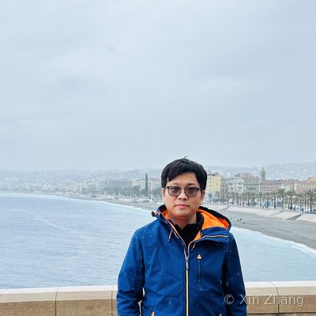

About
I am currently a tenure-track Associate Professor at School of Mathematical Sciences, Tongji University, Shanghai. Before joining Tongji, I was a postdoctoral researcher in Research Institute for Science and Engineering (理工学術院総合研究所), Waseda University (早稲田大学), working under Prof. Shibata Yoshihiro (柴田 良弘). I obtained my PhD in mathematics in September 2017 from Université Paris-Est Créteil Val-de-Marne, under the supervision of Prof. Danchin Raphaël .
Research
Nonlinear partial differential equations in fluid dynamics, free boundary value problems.
News
Contact
E-mail: xinzhang2020 [at] tongji.edu.cn
Office: Ningjing Building 203, Siping Road 1239, Shanghai 200092, China
Papers
Research Interests
My research field is the mathematical analysis of nonlinear partial differential equations arising in fluid dynamics. In particular, I mainly study the sharp interface model associated to Navier-Stokes equations, which describes the motion of incompressible or compressible viscous flows with moving surface, or the motion of two-phase viscous flows with free interface. The methods I use are primarily harmonic analysis and functional analysis, and I am interested in well-posedness or ill-posedness theory in critical spaces, decay estimates, and singular limits.
Preprints
-
Saito Hirokazu; Zhang, Xin — On the dispersive effect of internal gravity waves for the two-phase Stokes semigroup. Submitted
-
Li Ming; Peng Linyu; Zhang Ping; Zhang, Xin — Local profiles of self-similar solutions of the planar stationary Navier-Stokes equations. Submitted
-
Fujii Mikihiro; Tsurumi Hiroyuki; Zhang, Xin — Decay rates of three dimensional stationary Navier-Stokes flows at the spatial infinity. Submitted
Published Papers
Book Chapters
Talks
No current items.
Teaching
Current
Past Teaching at Tongji University
Past Teaching at Waseda University
Students
Ph.D. Students
- Li Ming Since September 2024
- Xiang Jiaju Since September 2026
Master Students
- Wei Zhifan Since September 2025
- Huang Junye (co-advised by Dr. Yang Xiaochuan) Since September 2023
- Tu Miao September 2022 – March 2025 (defended)
- Zhou Wendu September 2022 – March 2025 (defended)